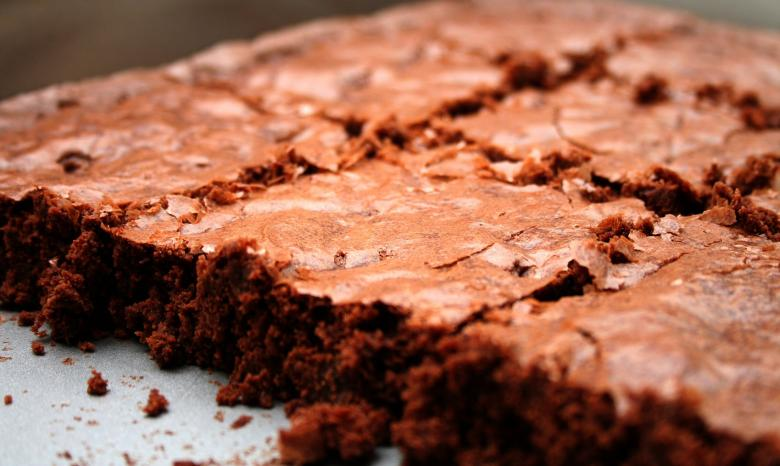

Angela's Double-Fudge Brownies
Come to our party, we have brownies.

Description
These fudgy delights are the life of the party. The scrumptious gooey texture and rich chocolate flavor make the ultimate combination for dessert lovers.
Just ask Kevin. He'll tell you.
Ingredients
- 3/4 cup baking cocoa
- 1/2 tsp baking soda
- 2/3 cup butter, melted, divided
- 1/2 cup boiling water
- 2 cups sugar
- 2 large eggs, room temperature
- 1 tsp vanilla extract
- 1-1/3 cups all-purpose flour
- 1/4 tsp salt
- 1/2 cup coarsely chopped pecans
- 2 cups (12 ounces) semisweet chocolate chunks
Steps
- Preheat oven to 350˚. In large bowl, combine cocoa and baking soda.
- Stir in 1/3 melted butter. Add boiling water; stir until blended.
- Stir in sugar, eggs, remaining butter, and vanilla.
- Combine flour and salt; stir into cocoa mixture. Stir in pecans and chocolate chunks.
- Convince everyone to come to your party, not theirs.
- Become head of the Party Planning Committee.
Adapted from recipe from Taste of Home.
Back to Directory